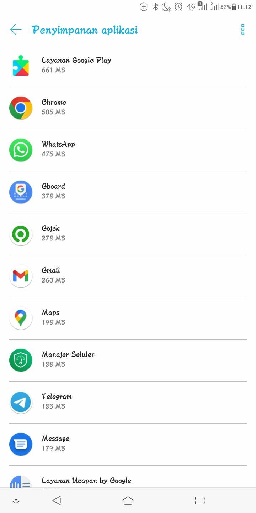
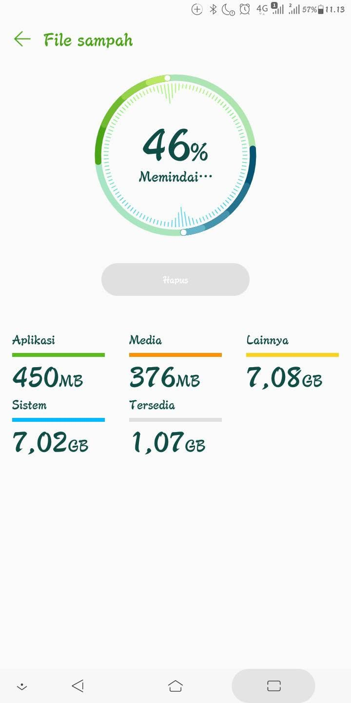
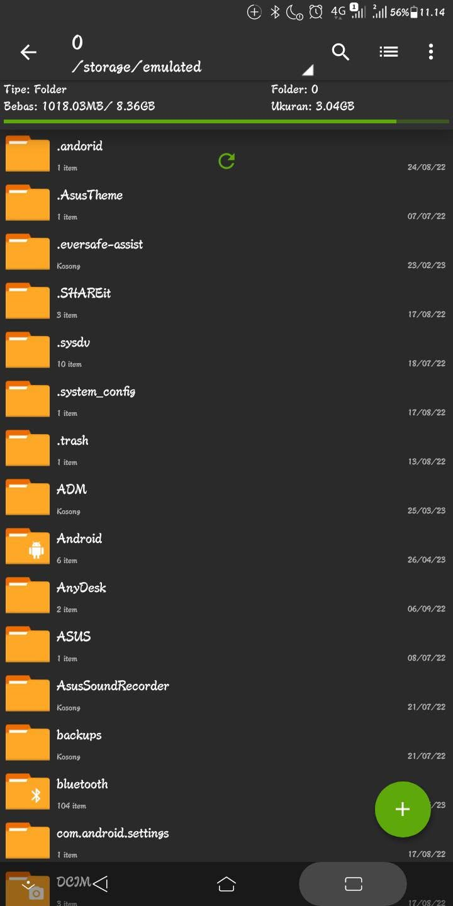

Bjir, nih hp tiba² makin kosong penyimpanan internalnya Kronologi: Nih hp tiba² masuk ke logo Zenfone padahal sya gk ngapa ngapain, malah sya lagi angkat salah satu TWS eh masuk ke logo Zenfone Ok deh dah sampe menu, scroll FB bentaran, buka Manajer Seluler kok malah sisa banyak bjir penyimpanan internalnya, padahal sisa sebelumnya berada di angka 500 MB an, nah ini malah jadi 1 GB an, cek ZArchiver sama sisa 1 GB juga, kaget dong takutnya ada data yg ilang (coba cek galeri ternyata aman), lalu sya buka setelan aplikasi, ternyata GMS menyusut ukurannya jadi 600 an MB, sebelumnya ukuran GMS tembus 1 GB an Ok itu aja


